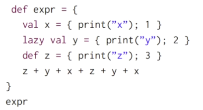
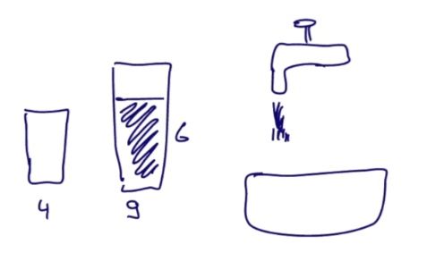
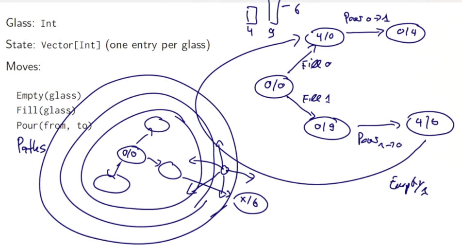
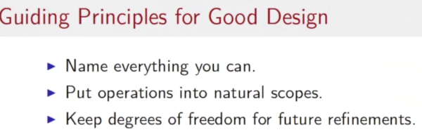

Lecture 2.1 - Structural Induction on Trees (optional)
Generalize the structural induction on list to general structures like trees.
To prove a property
P(t)for all treest:
* show for any leave l,P(l)holds
* for each internal nodetwith subtreess1...sn, showP(s1)&...&P(sn)holds
Example: Prove correctness for IntSets
recall the IntSet def: empty set or non-empty set organized in a binary (search) tree structure.
abstract class IntSet{
def incl(x: Int): IntSet
def contains(x: Int): Boolean
}
object Empty extends IntSet{
def contains(x: Int): Boolean = false
def incl(x: Int): IntSet = NonEmpty(x, Empty, Empty)
}
class NonEmpty(elem: Int, left: IntSet, right: IntSet) extends IntSet{
// NonEmpty is just a BST
def contains(x: Int): Boolean =
if (x<elem) left contains x
else if (x>elem) right contains x
else true
def incl(x: Int): IntSet =
if (x<elem) NonEmpty(elem, left incl x, right)
else if (x>elem) NonEmpty(elem, left, right incl x)
else this
}
Prove the correctness of this implementation: show that it respects certain laws:
prop1: Empty contains x = false
pf: easy...
prop2: (s incl x) contains x = true
pf: proof by structual induction on s
-
base case:
s = Empty,(Empty incl x) = NonEmpty(x, Empty, Empty) NonEmpty(x, Empty, Empty) contains x = true
-
induction step:
s=NonEmpty(z,l,r)- first case,
z=xs incl x = NonEmpty(x,l,r) incl x = NonEmpty(x,l,r)
so
NonEmpty(x, l, r) contains x = true- second case, z<xs incl x = NonEmpty(z,l,r) incl x = NonEmpty(z,l,r incl x)so:(s incl x) contains x = NonEmpty(z,l,r incl x) contains x = (r incl x) contains x = ture // by induction hypothesis
- third case, z>x: symmetric ...
- first case,
prop3: if x!=y, (s incl x) contains y = s contains y
pf: by structual induction
- base case:
s = Empty - induction step:
s=NonEmpty(z,l,r)5 cases to consider...- z=x
- z=y
- z<y<x
- y<z<x
- y<x<z
Lecture 2.2 - Streams
motivation: 2nd prime number between 1000 and 10000:
elegant, but not efficient solution:
( (1000 to 10000) filter isPrime) (1)
→ ALL prime numbers are constructed in the code, only use the first 2 elements...
⇒ *avoid computing the tail of a seq until necessary *
→ new data structure: Streams, like lists, but tail is eval only on demand
Stream class
constructor
Streams defined from either constant Stream.empty and constructor Stream.cons
ex: val xs = Stream.cons(1, Stram.cons(2, Stream.empty))
(Stream.empty~=Nil, Stream.cons~=::)
or by using the Stream object as a factory (like other collections): val xs = Stream(1,2,3)
toStream()
toStream on a collection will turn the collection into a stream.
scala> (1 to 1000).toStream
res1: scala.collection.immutable.Stream[Int] = Stream(1, ?) // the tail is (?) -- not evaled
The tail is not evaled!
let's write a function to return a range as Stream ( returns (lo until hi).toStream) ):
def streamRange(lo: Int, hi: Int): Stream[Int] =
if (lo>hi) stream.empty)
else Stream.cons(lo, stramRange(lo+1, hi))
other methods
Stream supports almost all method of a List
((1000 to 10000).toStream filter isPrime)(1)
Exception: concat operator :: will always return a list instead of a stream.
→ alternative: #:: returns a stream
x#::xs == Stream.cons(x,xs)
Implementation of Streams
similar to the implementation of lists.
scala
trait Stream[+A] extends Seq[A]{
def isEmpty: Boolean
def head: A
def tail: Stream [A]
}
concrete implementations are in the Stream companion object:
object Stream{
def cons[T](hd:T, tl: => Stream[T]) = // **`=>`: tl is by name, will be evaled later!
new Stream[T]{
def isEmpty = false
def head = hd
def tail = tl
}
val empty = new Stream[Nothing]{
def isEmpty = true
def head = throw new NoSuchElementException("empty.head")
def tail = throw new NoSuchElementException("empty.tail")
}
}
all other methods are implemented similar to list counterparts...
ex:
class Stream[+T]{
//...
def filter(p: T=>Boolean): Stream[T] =
if (isEmpty) this
else if (p(head)) cons(head, tail.filter(p))// tail.filter(p) will be evaled on demande
else tail.filter(p)
//...
}
Lecture 2.3 - Lazy Evaluation
pb with the last implementation of Streams: if tail is called several times, the corresponding stram will be re-computed each time.
→ can store the 1st result of the eval and use it later. (As in FP, the eval result never change)
⇒ this scheme is called lazy evaluation, as opposed to both by-name evaluation (def x) and strict-evaluation (val x). avoids both unnessary and repeated eval.
lazy val x = expr
exercice:
 → this will print: "xzyz"
adapt the lazy scheme for Stream implementation:
def cons[T](hd: T, tl: => Stream[T]) =
new Stream[T]{
def head = hd
lazy val tail = tl // **lazy instead of `def`**
//...
}
Lecture 2.4 - Computing with Infinite Sequences
with lazyness, can deal with inf seqs. ⇒ infinite Streams
example: the stream of all integers starting from a given number:
def from(n: Int): Stream[Int] =
n #:: from(n+1) // non-terminating recursive call here
all natural numbers:
val nats = from(0)
all multiples of 4:
nats map (_ * 4)
scala> def from(n:Int):Stream[Int] = n #:: from(n+1);
from: (n: Int)Stream[Int]
scala> val nats = from(0)
nats: Stream[Int] = Stream(0, ?)
scala> val m4s = nats map (_ * 4)
m4s: scala.collection.immutable.Stream[Int] = Stream(0, ?)
scala> (m4s take 10).toList
res2: List[Int] = List(0, 4, 8, 12, 16, 20, 24, 28, 32, 36)
```
example1: Sieve of Eratosthenes
-------------------------------

written in scala:
```scala
def sieve(s:Stream[Int]): Stream[Int] = // param s is the prime numbers for sieve
s.head #:: sieve(s.tail filter (_ % s.head!=0))
scala> val primes = sieve(from(2))
primes: Stream[Int] = Stream(2, ?)
scala> primes.take(100).toList
res0: List[Int] = List(2, 3, 5, 7, 11, 13, 17, 19, 23, 29, 31, 37, 41, 43, 47, 53, 59, 61, 67, 71, 73, 79, 83, 89, 97, 101, 103, 107, 109, 113, 127, 131, 137, 139, 149, 151, 157, 163, 167, 173, 179, 181, 191, 193, 197, 199, 211, 223, 227, 229, 233, 239, 241, 251, 257, 263, 269, 271, 277, 281, 283, 293, 307, 311, 313, 317, 331, 337, 347, 349, 353, 359, 367, 373, 379, 383, 389, 397, 401, 409, 419, 421, 431, 433, 439, 443, 449, 457, 461, 463, 467, 479, 487, 491, 499, 503, 509, 521, 523, 541)
example2: square root
previous implementation: use isGoodEnough test termination.
now: express the converging seq without having to worry about when to terminate:
def sqrtStream(x: Double): Stream[Double] = {
def improve(guess: Double) = (guess + x/guess) / 2
lazy val guesses: Stream[Double] = 1 #:: (guesses map improve) //**this will not explod!**
guesses
}
def isGoodEnough(guess: Double, x: Double) =
math.abs((guess * guess - x) / x) < 0.0001
(sqrtStream(4) filter (isGoodEnough(_, 4)) ) (1) // get the 1st guess that is good enough
Lecture 2.5 - Case Study: the Water Pouring Problem
task: "water pouring problem"
given: source, sink, glasses of different sizes, target size...
goal: fill/empty/move water from 1 glass to another

Model
Glass: Int
State: Vector[Int] one entry per glass
Moves:
Empty(glass), Fill(glass), Pour(from, to)

question: how to find the correct sequence of moves ?
⇒ BFS, generate all possible paths (from initial state where all glasses are empty) of length=1,2,3,...
Implementation
first: define Move classes, they have a change method, take one state as param and return a state:
class Pouring(capacity:Vector[Int]) {
type State = Vector[Int]
val initialState = capacity map ( x => 0 )
trait Move{
def change(state:State):State
}
case class Empty(glass:Int) extends Move{
def change(state: State) = state.updated(glass,0)
}
case class Fill(glass:Int) extends Move{
def change(state: State) = state.updated(glass,capacity(glass))
}
case class Pour(from:Int, to:Int) extends Move{
def change(state: State) ={
val amount = state(from) min (capacity(to)-state(to)) //the amount to move
state updated (from, state(from)-amount) updated (to, state(to)+amount)
}
}
...
}
generate all possible moves:
val glasses = capacity.indices // equal to `0 until capacity.length`
val moves = // all possible moves
( for(g<-glasses) yield Empty(g) ) ++
( for(g<-glasses) yield Fill(g) ) ++
( for(gfrom<-glasses; gto<-glasses; if gfrom!=gto) yield Pour(gfrom, gto) )
Then define a Path class:
class Path(history: List[Move]){// history: moves in reversed order
def endState:State = // given a path (list ot moves), return the final state by following the path
(history foldRight(initialState)) ( (mv:Move, stt:State) => mv change stt) // as in the list are reversed order of moves, use foldright
def extend(move: Move) = new Path(move::history)
override def toString =
( history.reverse mkString " " ) + "-->" + endState
}
val initialPath = new Path(Nil)
Then define a Stream of path sets: given current (set of) paths, extend one move and generate (a set of) paths of longer length:
def from(paths: Set[Path]): Stream[Set[Path]] ={
if(paths.isEmpty) Stream.empty
else {
val more = for{
path<-paths
next <- moves map path.extend
}yield next
paths #:: from(more)
}
}
val pathSets = from(Set(initialPath))
finally, solve the problem: for each path, track its end state, and if the target value is in the end state, return the path.
def solutions(target:Int):Stream[Path] =
for{
pathsets <- pathSets
path <- pathsets
if path.endState contains target
} yield path
pb: too slow for some case
→ we generate ALL paths of a certain length in the stream, but in the paths, we should avoid returning to a preivous state !
→ re-define the from function: add a param of explored set of states.
def from(paths: Set[Path], explored:Set[State]): Stream[Set[Path]] ={
if(paths.isEmpty) Stream.empty
else {
val more = for{
path<-paths
nextpath <- moves map path.extend
if (explored contains nextpath.endState)==false
}yield nextpath
val newstates = more map (_.endState)
paths #:: from(more, explored.union(newstates))
}
}
val pathSets = from(Set(initialPath), Set(initialState))
→ more improvement: avoid computing endState(a foldRight) over and over again — add to class param.
class Path(history: List[Move], val endState:State){// history: moves in reversed order
def extend(move: Move) = new Path(move::history, move change endState)
override def toString =
( history.reverse mkString " " ) + "-->" + endState
}

Programming Assignment: Bloxorz
https://github.com/X-Wei/Coursera-progfun2/tree/master/hw2-stream-bloxorz/streams
Disqus 留言